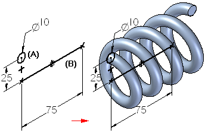
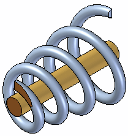

Helical Protrusion command
Use the Helical Protrusion command  to construct a protrusion by sweeping a cross section (A) along a helical path (B)
you define.
to construct a protrusion by sweeping a cross section (A) along a helical path (B)
you define.

You can use this command to construct right and left-handed helixes, constant and variable radius helixes, and constant and variable pitch helixes. You can also define the extent of the helix using faces on another feature.

When constructing parts with industry standard threads, you should typically use the Hole or Thread commands, not the Helical Protrusion or Helical Cutout commands.
Helical features require significantly more memory to construct and display in part documents, and take significantly longer to process in a drawing view. You should only use helical features where the actual shape of the helical feature is important to the design or manufacturing process, such as with springs and custom or unique threads.
How do I
Construct a helical protrusion in the synchronous environmentConstruct a helical protrusion or cutout in the ordered environment
Construct a helical cutout
Move or edit a helix
Learn more
Constructing helical featuresLook up more details
Helical Cutout commandHelical Cutout/Protrusion command bar
Helical command bar
Helix Options dialog box (synchronous environment)
Helix Options dialog box (ordered environment)